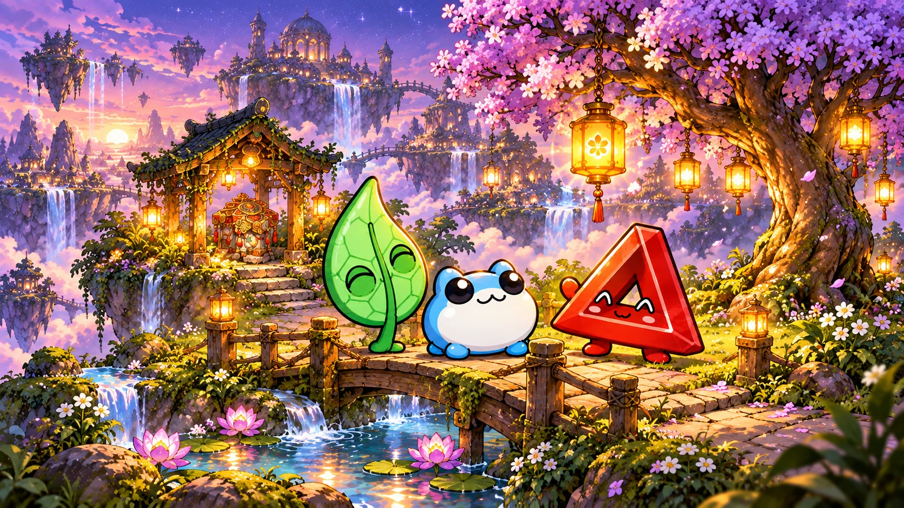

Look · Discover · Read together
Toby’s Lore Land Explorer
Come along with Blue Toby, Taboshi, and Patience. Tap a numbered spot to find a tiny story, a familiar friend, or something new to notice.
Lantern Garden
A little light. Three good friends.

Choose a number in the picture—or a discovery button below. Explore in any order.
0 of 5 discoveries found
Read this land’s story →A lovely little adventure!
This browser can show our picture stories. Try a newer browser for the interactive explorer.
For grown-ups: a little exploring together
Each of the three lands has five discoveries. Revisit a spot as often as you like; discoveries stay found until you choose “Explore this land again.” That starts only the current land afresh. There is no timer or required order.
This browser remembers the last land and discovered spots on this device. If saving is blocked, you can still explore for the current visit. The garden game keeps its own separate progress.
“Read to me” uses voices available in your browser and starts only when selected. You can stop it at any time, or read together instead. Closing a discovery stops its narration.
These pictures and tiny stories are imagined Children’s Corner adaptations inspired by the creator’s Lore Land artwork. The original deeds, titles, and Toadgod posts are distinct from this game’s fictional dialogue. Learn more in the Lore Land story notes.